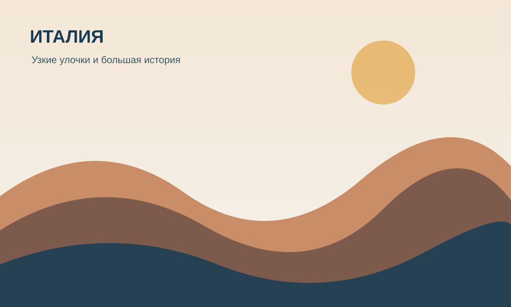

01
Европа · Городская культура
Италия
Начни с Рима: античные памятники соседствуют здесь с шумными площадями и маленькими кафе. А если захочется спокойствия — отправляйся к озёрам или на побережье.
Идея маршрута: Рим → Флоренция → Венеция.